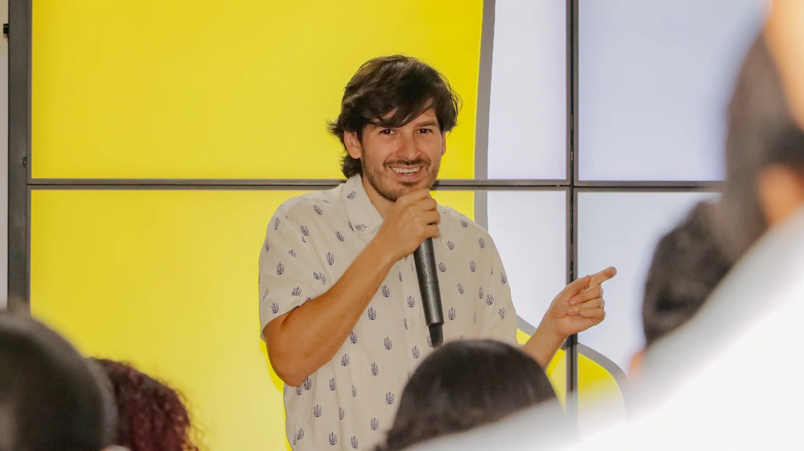
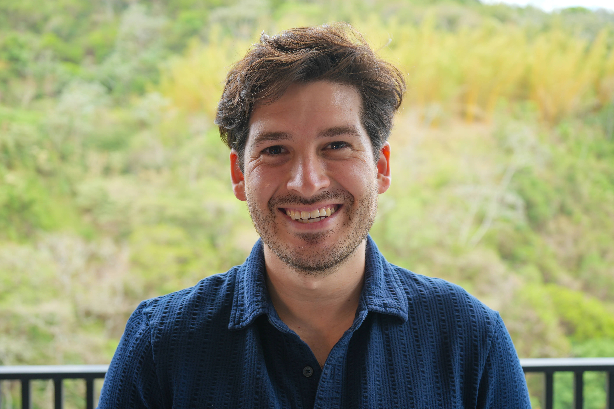
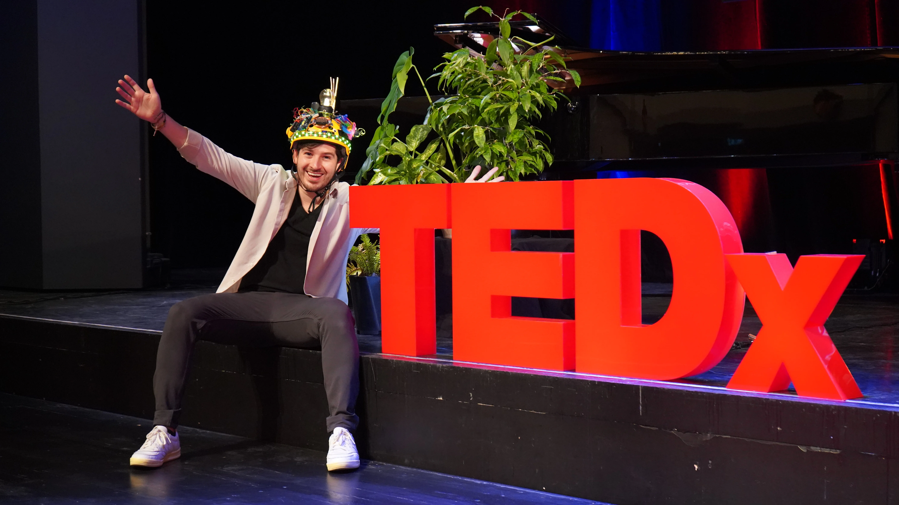

Founder & CEO of WeSpark · Author · TEDx Speaker · Salvadoran

Nelson Inno is a Salvadoran entrepreneur, founder and CEO of WeSpark, and author of Unstable Innovation. He builds AI-powered education systems for large enterprises, governments, and universities — and co-designed Bitcoin Diploma 2.0 with El Salvador's National Bitcoin Office, a curriculum the Ministry of Education plans to bring to up to 500,000 students.
His work has been featured in Forbes Centroamérica, ARD, ZDF, Cointelegraph, and El Salvador's national press. His TEDx talk, "Are Schools Prepared for the Future?", explores the same question that has guided his career: how learning has to change if the people who learn through it are going to thrive in the world they will actually live in.
Be the ordinary,
build the extraordinary.

Nelson Inno · one minute · a decade of work
Growing up in the 90s, Nelson's fascination with computers, video games, and the internet sparked a lifelong passion for creativity and technology. While others played with LEGOs, young Nelson assembled old computer parts. By 13 he had built his first website and discovered his love for video and animation.
He graduated from the German School of San Salvador and the International Baccalaureate program. At 18 he moved to Germany, where he earned a degree as an Industrial and Product Development Engineer at Furtwangen University, followed by an MBA in Sales and Service Engineering.
Nelson's professional path runs through Lufthansa Airlines, Microsoft, Siemens, Avianca, Marquardt (Automotive), and Aeroman (Aviation MRO). His career culminated as Senior Innovation Manager at Lufthansa, where he designed and built four new innovation departments and strategies for multiple Lufthansa Group companies — and contributed to pioneering projects like TACIT and GAMIFY for the European Union.
In 2019 he founded WeSpark, an innovation agency committed to disrupting the industry with distinctive, bold, impactful approaches. In 2025, WeSpark relocated to San Salvador, El Salvador, and entered a new strategic phase under the joint leadership of Nelson Inno and Adam Nili — expanding its focus toward national education systems and institutional Bitcoin programs.
As an advocate for unbiased education, Nelson dedicates much of his pro bono work to improving learning systems for future generations. He has volunteered with and supported NGOs such as the Gloria Kriete Foundation, contributing expertise in megatrends, entrepreneurship, and financial education.
His TEDx talk, "Are Schools Prepared for the Future?", encapsulates his vision for revolutionizing education to meet the needs of an ever-evolving world.

TEDxVaduz · 18 minutes · August 2021
In 2026, Nelson and the WeSpark team co-designed Bitcoin Diploma 2.0, a national-level financial and Bitcoin education initiative implemented in El Salvador's public education system. The program has been covered by international media, including Cointelegraph en Español, highlighting its rollout and institutional impact.
Nelson works at the intersection of AI, financial education, and national curriculum design, advising institutions on how to build scalable, future-ready education systems.
Nelson is deeply passionate about Bitcoin, sovereign technology, and decentralized systems. He has invested thousands of hours researching, teaching, and designing institutional-grade Bitcoin education programs. Through WeSpark, he works with governments, institutions, and treasury-focused organizations to design structured Bitcoin adoption and education strategies.
Nelson's professional life is organized around three operating principles and three directional preferences. The principles sound simple and are not.
This page is about Nelson the author. For the complete career story — projects, partners, talks, and the work currently underway — visit his personal site.